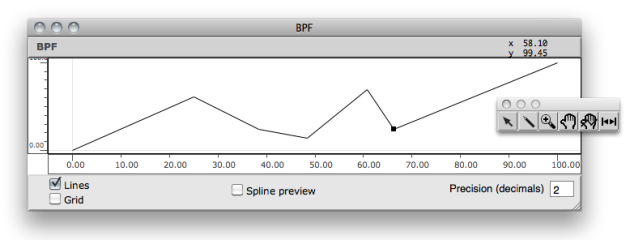
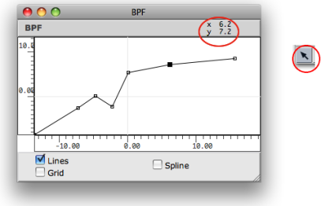
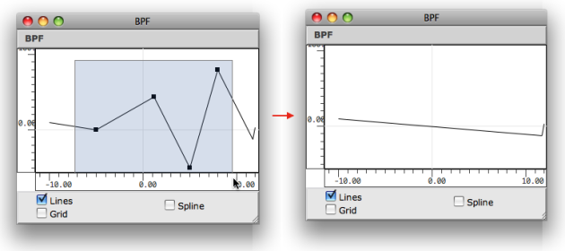
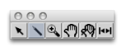
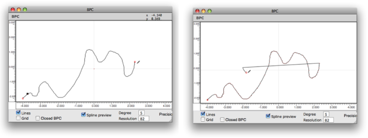
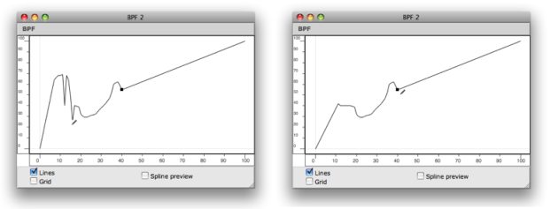
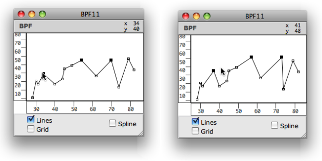
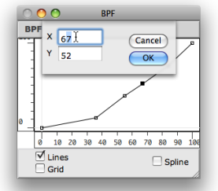
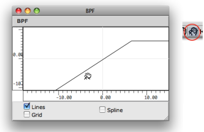
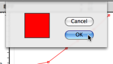

OpenMusic DocumentationHiérarchie de section : OM 6.6 User Manual > Basic Tools > Curves and Functions > Editors > Edition Basics
OpenMusic DocumentationHiérarchie de section : OM 6.6 User Manual > Basic Tools > Curves and Functions > Editors > Edition Basics
Navigation : page précédente | page suivante
Attention, votre navigateur ne supporte pas le javascript ou celui-ci à été désactivé. Certaines fonctionnalités de ce guide sont restreintes.
Edition Basics
Double click on a BPF or BPC to open the editor window . The editor opens along with a palette . This palette has a number of edition tools, which allow to add, delete and manipulate points within the editor.

The BPF editor and the edition palette.
Adding / Deleting Points
The following operations are performed with the pointer .
Adding Points in a BPF
To add points on the object, Cmd click in the editor window at the desired point position. Note that the coordinates of the pointer are displayed in the upper part of the editor window.

Adding points in a BPC
In a BPC, points can be added anywhere in the x / y plane, so that the new points are automatically inserted at the end of the points list . To add a point between two existing points, click precisely on the curve segment.
Delete
To delete points :
select a region of the object
press
Backspace.

Drawing in BPFs vs. BPCs
The Pen Tool

|
The "pen" tool allows to draw on the BPF or BPC Editor. To draw a curve, select it press the mouse button while moving on the editorin the editor. |

{kind=link}
With a BPC , points are added at the end of the current curve.

{kind=link}
With a BPF , points are only added or moved to the closest x -coordinate from the cursor.
Use CMD + click in order to activate the selection mode while pen mode tool is selected.
Moving Points
Moving Points Manually
The location of one or several points can be modified manually :
- with a click and drag
- with a selection and the
→keys.

Editing Coordinates
To access and edit the coordinates of a point :
Note : floats are truncated depending on the object "decimals" parameter. If "decimals" = 0, coordinate values are rounded to the closest integer. |

|
Moving the Whole Object

To change the position of a curve within the editor's surface :
select the curve tool
click and drag the object in the editor.
Extra Edition
Colour

|
To change the colour of a curve :
Assigning specific colours to curves may be especially useful in BPF and BPC-libs, which can have several BPFs and BPCs. |
Multiple Curves
Références :
Plan :
Navigation : page précédente | page suivante
A propos...(c) Ircam - Centre Pompidou